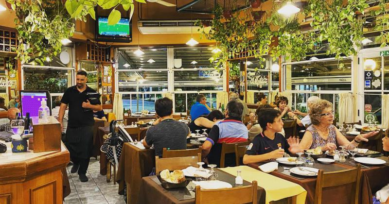
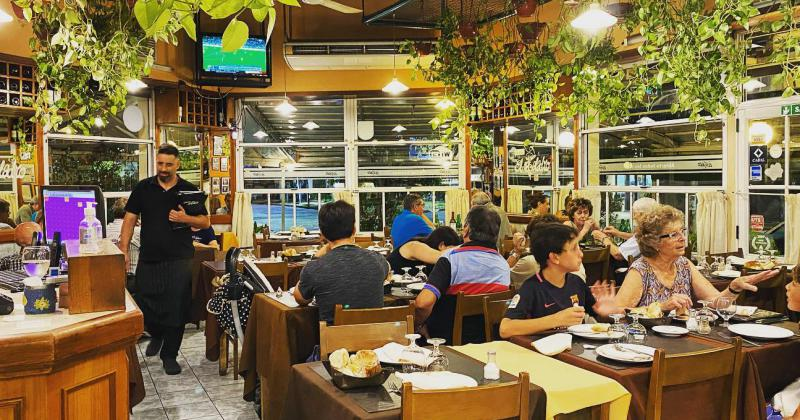

¡Bienvenido a nuestra cocina!
Viniste, probaste nuestros platos y te quedaste con ganas de revivirlos? Te enseñamos 3 de los platos principales de nuestra cantina, de manera que los puedas preparar fácil en casa.

Viniste, probaste nuestros platos y te quedaste con ganas de revivirlos? Te enseñamos 3 de los platos principales de nuestra cantina, de manera que los puedas preparar fácil en casa.
